MARKET NEWSROOM
The reporting
behind the signals
A visual source ledger for the selected market, connecting original reporting with the current intelligence view.
LEAD REPORTING
Stories setting the frame
The opening stories in the current regional source set.

ABC News · 2026-11-07 08:16:18 UTC
Cross-code star scores hat-trick as Kiwi Ferns make another final
VIEW STORY ↗
ABC News · 2026-11-07 06:43:19 UTC
Man arrested and charged for alleged harassment of SA Speaker
VIEW STORY ↗
ABC News · 2026-11-07 06:15:48 UTC
Man, 75, dies in Goldfields mine incident
VIEW STORY ↗
ABC News · 2026-11-07 06:01:27 UTC
Live: Parliamentary newcomers Opportunity potential kingmakers in tight NZ election
VIEW STORY ↗MORE HEADLINES
Follow the reporting
The remaining 56 stories in the current source order.
Headlines 005—016 12 stories
 005
005ABC News · 2026-11-07 05:45:49 UTC
↗Live: Ponga leads Kiwis to World Cup final as sudden wind change cruels Tonga
 006
006ABC News · 2026-11-07 05:38:32 UTC
↗Supercars, SUVs take to Perth suburb to support teen assault victim
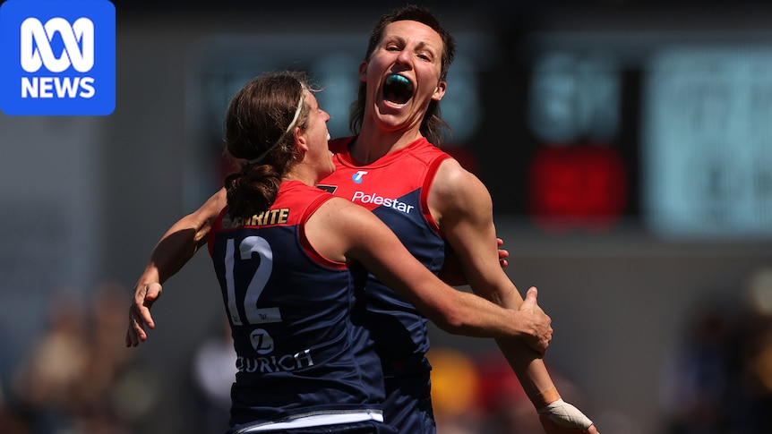
007ABC News · 2026-11-07 05:21:53 UTC
↗008Demons rally and Kangaroos cruise into AFLW prelims
ABC News · 2026-11-07 05:14:51 UTC
↗009Tasmanian nurses rally following 'disappointing' government pay offer
ABC News · 2026-11-07 05:08:23 UTC
↗US senator with Australian ties now a presidential frontrunner
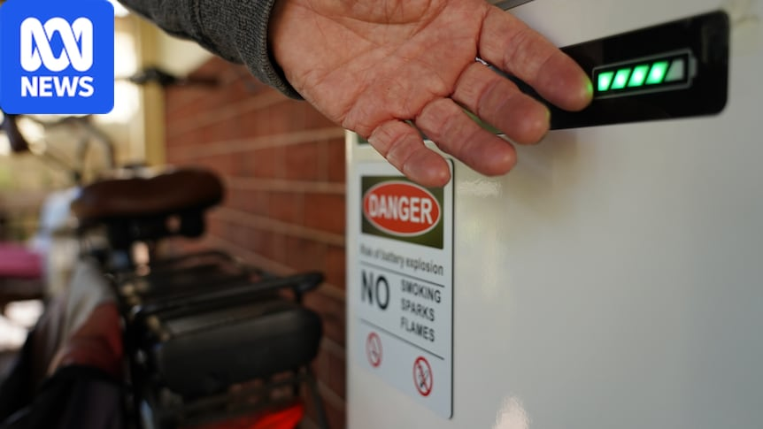
010ABC News · 2026-11-07 05:08:21 UTC
↗Home battery subsidy scheme lauded despite government's search for cuts
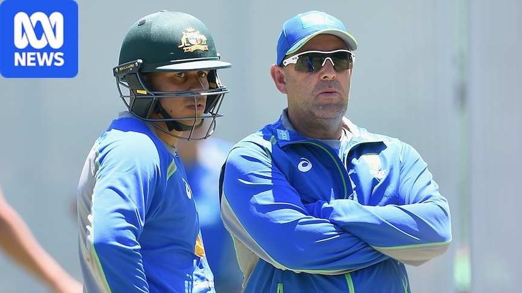
011ABC News · 2026-11-07 03:49:32 UTC
↗012Lehmann says 'everyone' was ball tampering globally, denies Khawaja's sandpaper claims
ABC News · 2026-11-07 03:27:57 UTC
↗US offers $29m reward for details on Iran's nuclear program
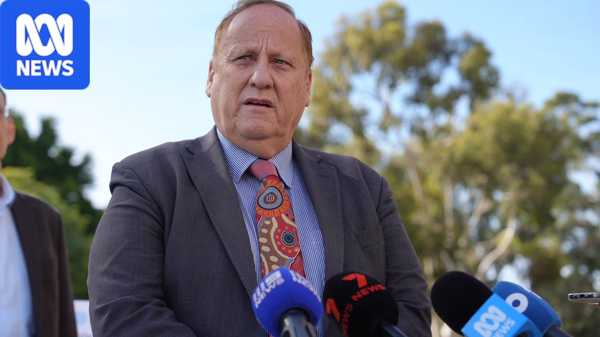
013ABC News · 2026-11-07 03:03:35 UTC
↗Elders call for leadership to address Indigenous child safety crisis
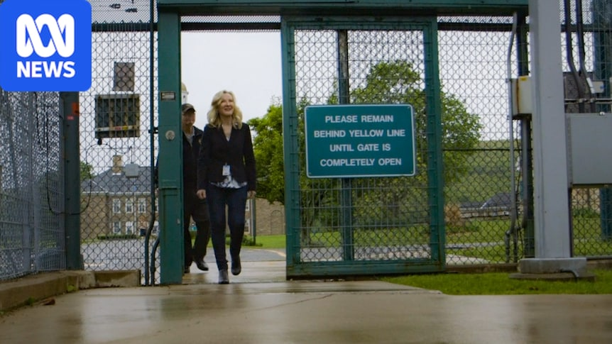
014ABC News · 2026-11-07 02:31:03 UTC
↗For female 'lifers' in the US, prison will never be home
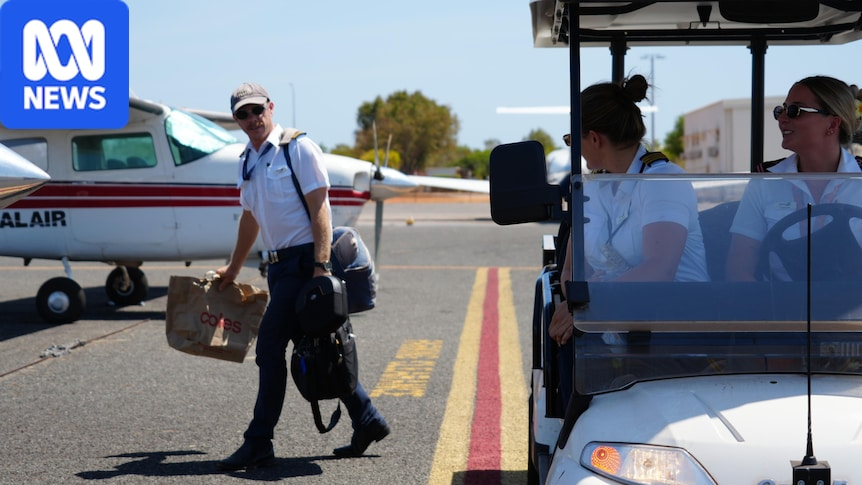
015ABC News · 2026-11-07 02:08:50 UTC
↗016Just 8 per cent of licensed pilots in Australia are women
ABC News · 2026-11-07 02:03:43 UTC
↗Inside the multi-billion-dollar industry of illegal peptides pushed by influencers
Headlines 017—028 12 stories
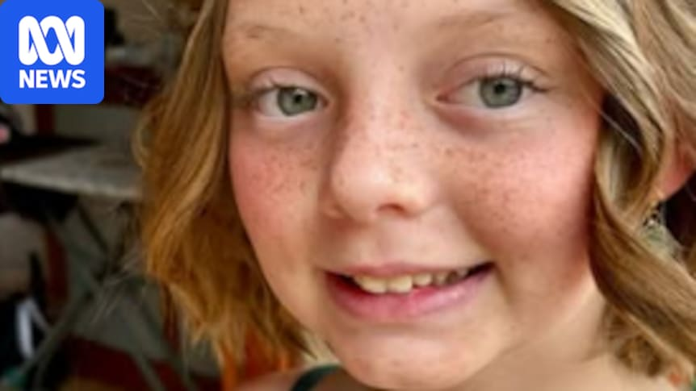
017ABC News · 2026-11-07 01:41:51 UTC
↗018Schoolgirl fighting cancer meets her idol Benson Boone
ABC News · 2026-11-07 01:32:43 UTC
↗019Inclusion and education on agenda for marking WA's bicentenary in 2029
ABC News · 2026-11-07 01:26:27 UTC
↗'Strong, cheeky' Shepparton boy remembered after tragic river death
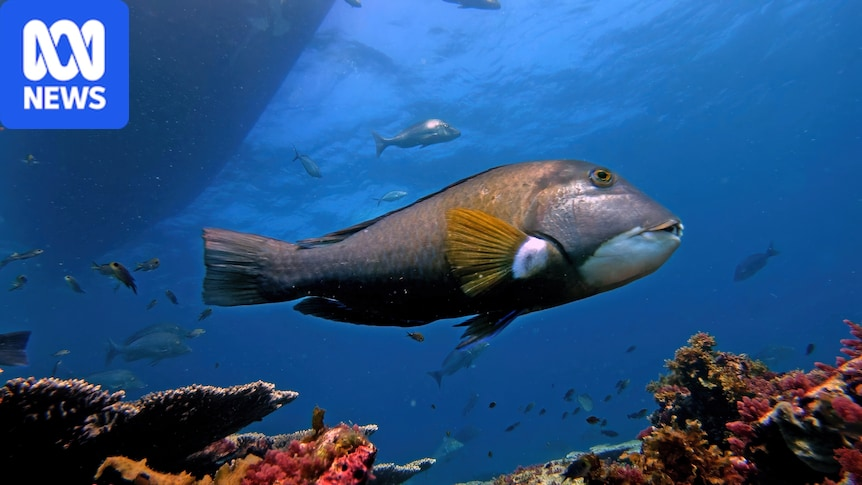
020ABC News · 2026-11-07 01:10:15 UTC
↗021Fishers' hurt on display as WA's demersal ban faces parliamentary scrutiny
SMH Business · 2026-11-07 19:30:00+11:00
↗022Is there a future for malls without their department store anchors?
SMH Business · 2026-11-07 18:15:00+11:00
↗Donald Trump’s humiliation is an opportunity for America
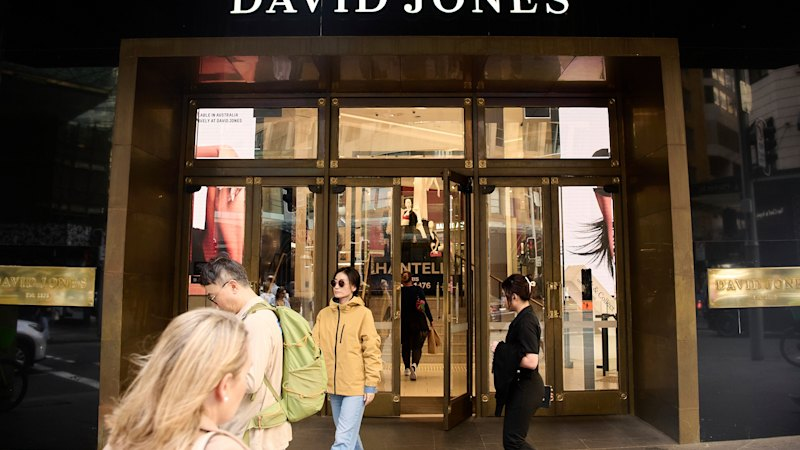
023SMH Business · 2026-11-07 05:00:00+11:00
↗024Behind closed doors: Inside the $5 million meeting that sealed the downfall of David Jones
SMH Business · 2026-11-06 17:35:00+11:00
↗Lone wolf: Trump is capable of anything after being embarrassed
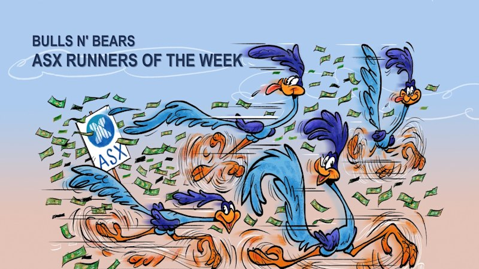
025SMH Business · 2026-11-06 17:05:36+11:00
↗ASX Runners of the Week: BPM Minerals, NEXTDC & SciDev
 026
026SMH Business · 2026-11-06 17:02:35+11:00
↗Sharemarket dips but ends week higher despite risks
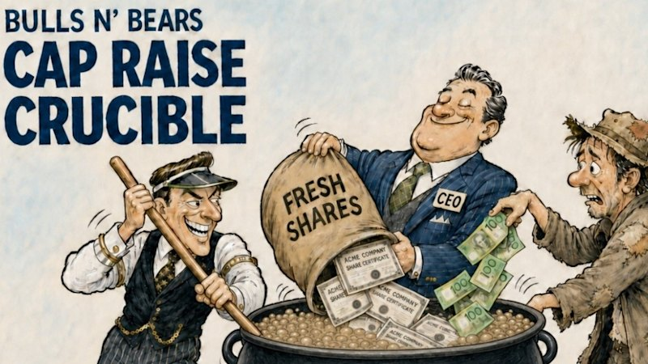
027SMH Business · 2026-11-06 17:02:26+11:00
↗028Big gold raise menu feeds broker picnic
SMH Business · 2026-11-06 15:43:42+11:00
↗Nine investors rail against executive pay and biscuit selection
Headlines 029—040 12 stories
029
SMH Business · 2026-11-06 14:07:57+11:00
↗‘Insult to my culture’: Italian chef sacked after refusing to put pineapple on pizza
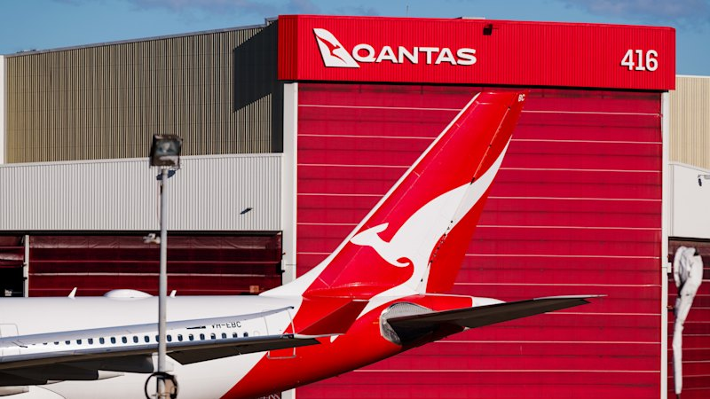
030SMH Business · 2026-11-06 13:28:52+11:00
↗Qantas to raise airfares, cut flights as fuel costs rise by $1 billion
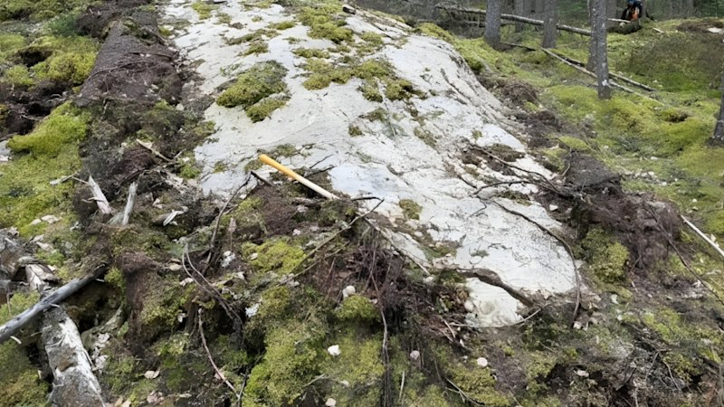
031SMH Business · 2026-11-06 12:29:00+11:00
↗Critical Resources kicks off new Canadian lithium hunt
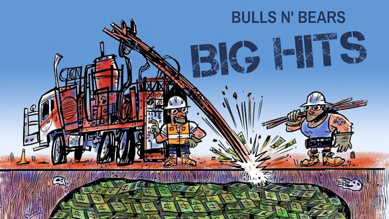
032SMH Business · 2026-11-06 11:53:20+11:00
↗Big Hits: Chalice, BPM Minerals and Australian Gold and Copper
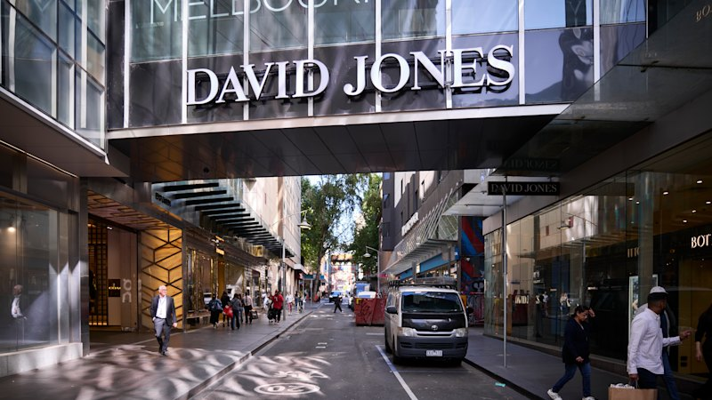
033SMH Business · 2026-11-06 11:45:18+11:00
↗Six things to know about David Jones on the brink
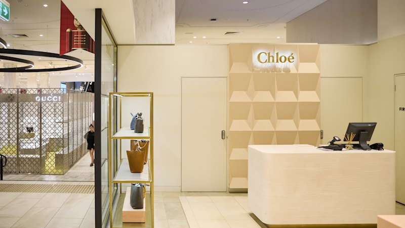
034SMH Business · 2026-11-06 11:43:14+11:00
↗035‘Still no payment’: David Jones suppliers vent after collapse
SMH Business · 2026-11-06 05:12:00+11:00
↗036My partner’s colleagues are always off sick. Is it wrong to speak up?
SMH Business · 2026-11-06 05:00:00+11:00
↗037Is this even legal? Ten’s staff scratching their heads over ‘buyout’ offer
SMH Business · 2026-11-06 05:00:00+11:00
↗Billionaire Paul Little pitches $8m South Yarra site near Melbourne High
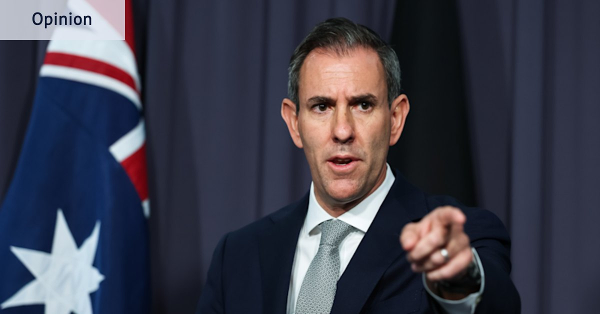
038SMH Business · 2026-11-06 05:00:00+11:00
↗Cutting government spending may slow prices, but it could bring on something worse
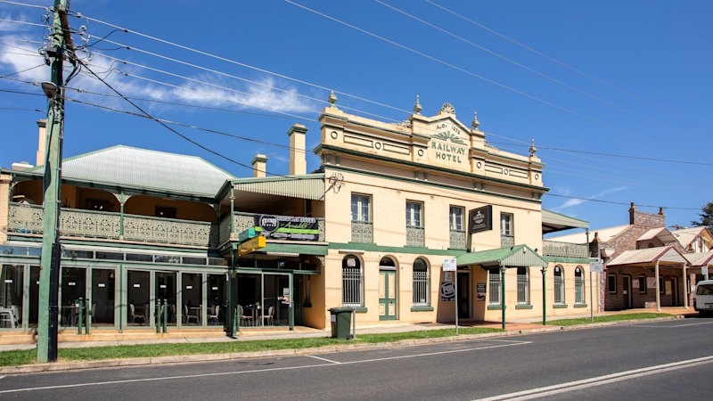
039SMH Business · 2026-11-06 05:00:00+11:00
↗040Can’t get into Qantas’ exclusive Chairman’s Lounge? There soon may be another option
SMH Business · 2026-11-05 18:35:00+11:00
↗Donald Trump has become a big problem for Fox News
Headlines 041—052 12 stories
041
The Guardian · 2026-11-05 14:00:28 UTC
↗042David Jones wrongly believed it could be exclusive and everywhere. Can the 188-year-old institution keep the lights on for Christmas?
The Guardian · 2026-11-05 07:18:06 UTC
↗043Like many others, 87-year-old Janet came to ‘say goodbye’ to the Australian institution that is David Jones
The Guardian · 2026-11-05 03:12:54 UTC
↗044David Jones goes into administration, with store closures expected and thousands of jobs at risk
The Guardian · 2026-11-04 14:00:37 UTC
↗045The RBA says there is ‘excess demand’ in the economy. Households doing it tough might disagree | Greg Jericho
The Guardian · 2026-11-04 14:00:37 UTC
↗046Australia has a bad inflation problem. So why are we middle-of-the pack on the misery index?
MacroBusiness · 2026-11-06 20:00:57 UTC
↗047US midterms: less political risk, same AI question
MacroBusiness · 2026-11-06 13:01:45 UTC
↗048Weekend reading and MB media appearances
MacroBusiness · 2026-11-06 01:00:33 UTC
↗049Australian democracy is under attack
MacroBusiness · 2026-11-06 00:00:10 UTC
↗Australian housing prices following NZ’s path to its crash
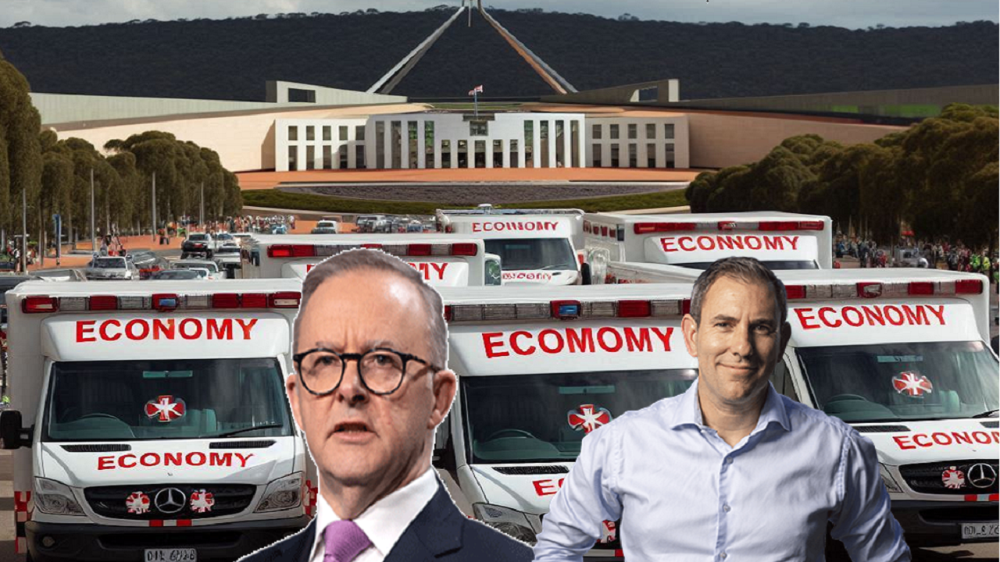
050MacroBusiness · 2026-11-05 23:00:55 UTC
↗Labor delivers ‘no growth’ economy
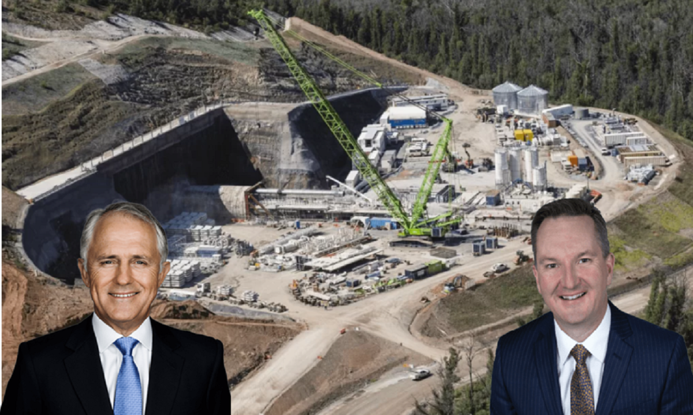
051MacroBusiness · 2026-11-05 21:00:36 UTC
↗Aussie taxpayers wear Snowy Hydro 2.0’s enormous cost
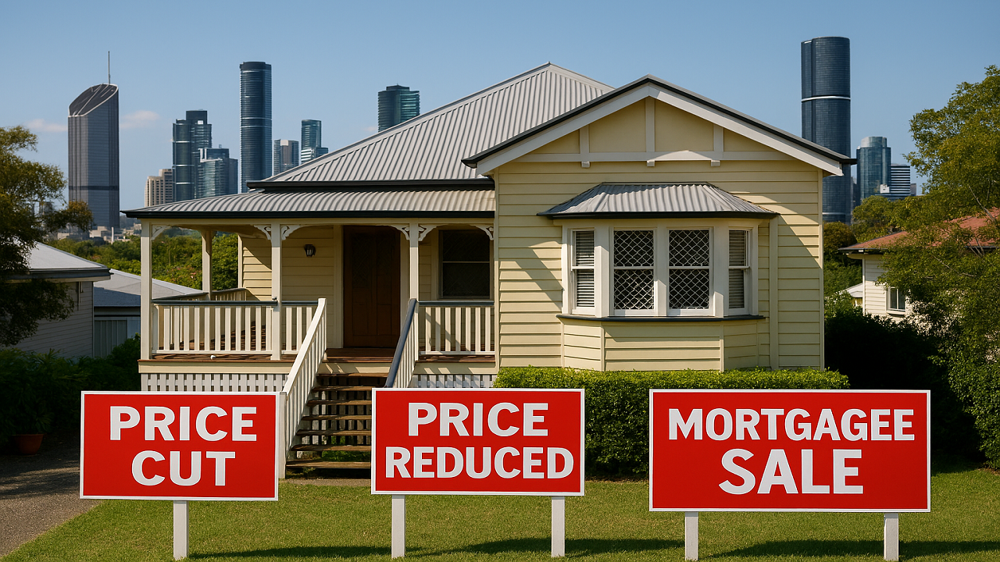
052MacroBusiness · 2026-11-05 13:01:12 UTC
↗With borrowing capacity cut, house prices will plunge
Headlines 053—060 8 stories
053
MacroBusiness · 2026-11-05 03:00:20 UTC
↗Ciao David Jones!
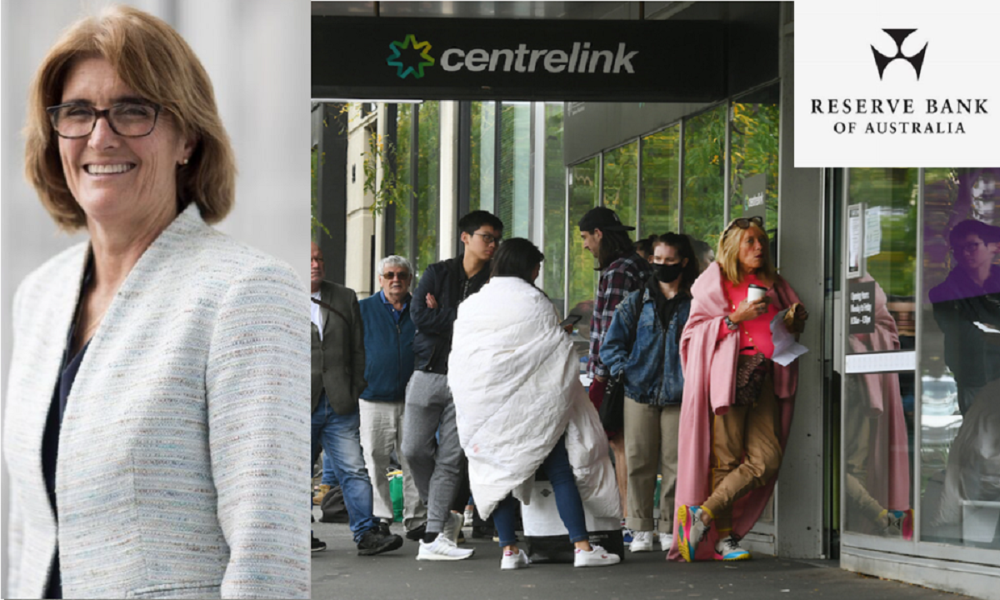
054MacroBusiness · 2026-11-05 01:00:08 UTC
↗055RBA believes unemployment needs to go higher
MacroBusiness · 2026-11-05 00:30:49 UTC
↗056Podcast: Why Investors Can’t Afford to Ignore America’s 2026 Midterms
MacroBusiness · 2026-11-05 00:00:52 UTC
↗057Victoria’s graft and corruption must stop
MacroBusiness · 2026-11-04 23:00:09 UTC
↗058Dwelling approvals boom before the crash
MacroBusiness · 2026-11-04 22:30:43 UTC
↗059What does the blue tsunami mean for markets?
MacroBusiness · 2026-11-04 22:00:17 UTC
↗060Iran reverse regime change sweeps America
MacroBusiness · 2026-11-04 20:00:53 UTC
↗